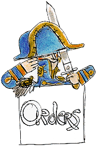

Probabilistic Ordering

Intuition
Relevance of a axiom is the probability that the axiom is necessary for a solution
Definition
Let
C
be the set of axioms in a given combination
Let
rel(F)
be the relevance of formula
F
The probability of the combination containing the necessary axioms is approximated by:
Π(rel(F)) * Π(1-rel(F)) F∈C F∉C
Use combinations in
increasing
order of probability
If an attempt fails before it's time,
TimePerAxiomReducedProblem
is dynamically updated